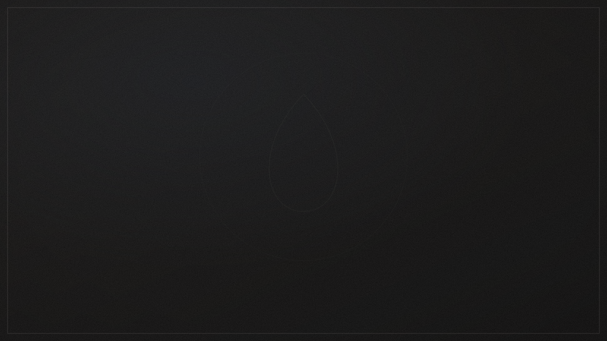

Textile & matières
Comprendre ce qui touche le corps : fibres, tissages, interfaces avec la peau, respirabilité.
Une plateforme de recherche appliquée à la matière, à l’usage, au confort, à la performance, à la durabilité et à la santé intime.

Observer. Formuler. Tester. Documenter. Recommencer. Mirenza Lab est une plateforme de recherche appliquée à la matière, à l’usage et aux besoins de santé intime. Un axe de recherche n’est jamais présenté comme un bénéfice produit tant qu’il n’a pas été validé.
Comprendre ce qui touche le corps : fibres, tissages, interfaces avec la peau, respirabilité.
Gestion des fluides, transfert, rétention, tenue dans la durée et en mouvement.
Observer le réel avant de concevoir : ergonomie, ressenti, gestes du quotidien.
Vieillissement, entretien, tenue des matières lavage après lavage.
Besoins de santé intime, tolérance, qualité de vie au quotidien.
Un axe de recherche et de développement consacré aux besoins liés à l’endométriose.
Écouter les usages et les besoins réels avant de formuler une hypothèse.
Traduire un besoin en question de recherche mesurable.
Éprouver matières et prototypes selon des protocoles reproductibles.
Mettre en regard les résultats, avant et après usage ou entretien.
Consigner méthodes, données et limites de manière traçable.
Chaque réponse ouvre une nouvelle question. La recherche est un cycle.
Nos films peuvent suggérer mesure, capillarité, thermique, vieillissement et prototypage ; ils ne montrent jamais une architecture confidentielle sans validation.